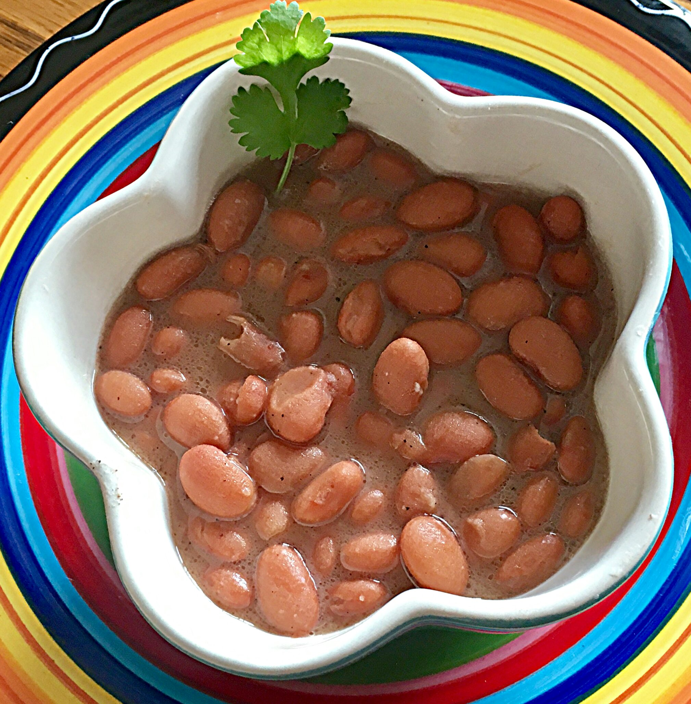

Beans Recipe

Description
This is the beans recipe I use for my weekly beans dish! Mexican
style beans are the beans I grew up with and have been cooking for
the past ten years. By following this recipe you will create a
healthy bean soup, full of protein, fiber, vitamins and minerals.
Once the soup is made, you can enjoy it with queso
fresco, or you can add more flavor with further preparation.
I like to prepare them further in two different ways, both
flavorful in their own ways!
Ingredients
- 3 cups of Peruvian beans
- 2 tablespoons of salt
- 9 cups of water
- 1 white onion
- 3 cloves of garlic
Optional Ingredients
- Fresh bacon
- Fresh yellow hot chili pepper and olive olive
Steps
- Pick out any debris or rocks from the beans.
- Soak beans in enough cold tap water to cover the beans.
- Peel onion and cut ends.
- Peel garlic and cut ends.
- Strain the beans then rinse them in the strainer.
- Add beans to pot with a 1:3 beans to water ratio.
- Add onion, garlic, and salt to the pot then stir together.
- Bring pot to a boil.
- Cover pot and bring down to low boil for 2 to 3 hours.
- Beans will be ready to eat once they are soft and easy to squeeze.
Optional Steps
- Dice bacon and sauté it then add and mash beans. Or option 2
- Wash and dry yellow chili pepper then sauté in olive oil.
Add and mash beans.
Return to homepage